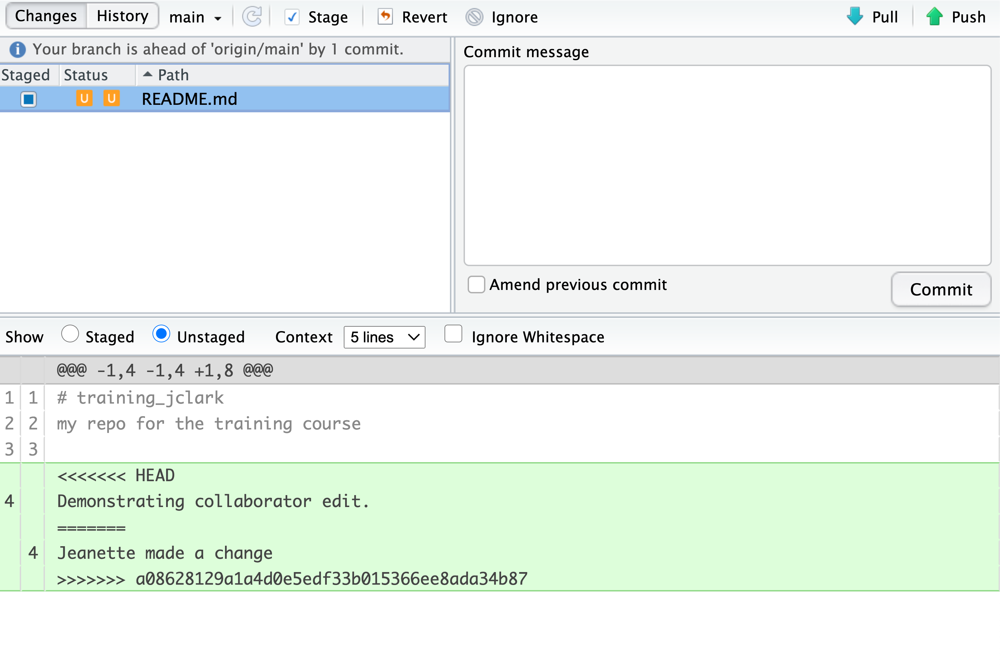
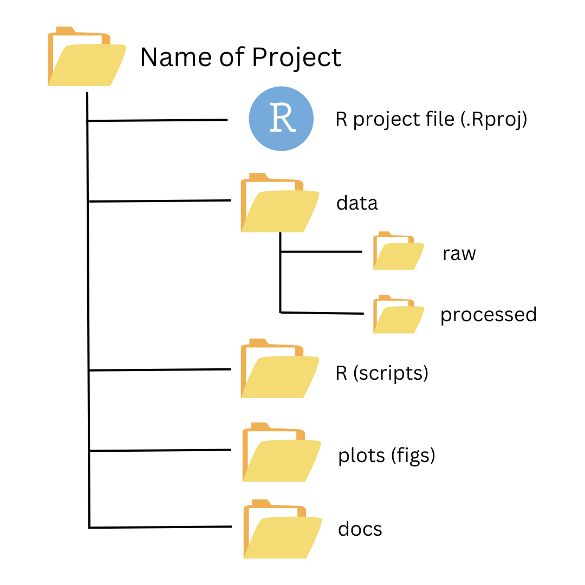

240410 Brown Bag
Commit - Pull - Push
Connecting GitHub to RStudio for Reproducible Research
Note: Brown Bag attendees will learn more from my presentation if they 1) bring their laptop or follow along on Zoom, 2) have RStudio loaded already to their machine, and 3) make sure that Git is either installed on your machine and the path to the Git executable is added to your system’s PATH environment variable.
OBJECTIVES:
Participants will understand that revision control supports reproducible and replaceable research
Participants will become familiar with a RStudio <-> GitHub workflow for revision control
(if time) Participants will participate in a code conflict resolution exercise
Subnote on YAML:
YAML Is the document’s metadata which sets guidelines on how your want the output of your document to look like. It is located at the top of your file, delineated by three dashes (---) at the top and at the bottom of it. It can be used to specify:
Characteristics of your documents such at title, author, date of creation.
Argument to pass on the building process to control the format of the output.
Add additional information such as the bibliography file (and formatting of the references)
Specific parameters for your report (eg: just used a subset of the data).
The information in this presentation was shamelessly taken from the February, 2024 materials from the Arctic Data Center training; Reproducible Approaches to Arctic Research Using R
- Jeanette Clark, Angie Garcia, Matthew B. Jones, Justin Kadi, Maggie Klope, Camila Vargas Poulsen (2024), Reproducible Approaches to Arctic Research Using R. Arctic Data Center. URL https://learning.nceas.ucsb.edu/2024-02-arctic.
You may also find these materials helpful for your work:
Angie Garcia, Matthew B. Jones, Justin Kadi, Maggie Klope, Camila Vargas Poulsen (2024), Fundamentals in Data Management for Qualitative and Quantitative Arctic Research. Arctic Data Center. URL https://learning.nceas.ucsb.edu/2024-01-arctic.
S. Jeanette Clark, Matthew B. Jones, Samantha Csik, Carmen Galaz García, Bryce Mecum, Natasha Haycock-Chavez, Daphne Virlar-Knight, Juliet Cohen, Anna Liljedahl. 2023. Scalable and Computationally Reproducible Approaches to Arctic Research. Arctic Data Center. doi:10.18739/A2QF8JM2V
Let’s get started: What is Reproducible Research?
Reproducible analysis allow you to automatize how the figures and the statistics in your analysis are generated. This process also helps your collaborators, your readers and your future self to follow your code trail the leads to the original data, increasing the transparency of your science.
Literate analysis help reduce the mistakes from copying and pasting across software, keeps results and models in sync, and allows you to provide interested readers with more information about the different approaches and analyses you tried before coming up with the final results (British Ecological Society (2017)).
Every file in the scientific process changes. Manuscripts are edited. Figures get revised. Code gets fixed when bugs are discovered. Sometimes those fixes lead to even more bugs, leading to more changes in the code base. Data files get combined together. Sometimes those same files are split and combined again. In just one research project, we can expect thousands of changes to occur.
These changes are important to track, and yet, we often use simplistic file names to do so. Many of us have experienced renaming a document or script multiple times with the ingenuine addition of “final” to the file name (like the comic above demonstrates).
You might think there is a better way, and you’d be right: version control. Version control provides an organized and transparent way to track changes in code and additional files. This practice was designed for software development, but is easily applicable to scientific programming.
There are many benefits to using a version control software including:
Maintain a history of your research project’s development while keeping your workspace clean
Facilitate collaboration and transparency when working on teams
Explore bugs or new features without disrupting your team members’ work
and more!
The version control system we’ll be diving into is Git, the most widely used modern version control system in the world.
With Git we can enhance our workflow:
Eliminate the need for cryptic filenames and comments to track our work.
Provide detailed descriptions of our changes through commits, making it easier to understand the reasons behind code modifications.
Work on multiple branches simultaneously, allowing for parallel development, and optionally merge them together.
Use commits to access and even execute older versions of our code.
Assign meaningful tags to specific versions of our code.
Additionally, Git offers a powerful distributed feature. Multiple individuals can work on the same analysis concurrently on their own computers, with the ability to merge everyone’s changes together.
But Before we dive into Git and GitHub…
In Summary, Reproducible Research is:
Working in a reproducible manner:
Increases research efficiency, accelerating the pace of your research and collaborations.
Provides transparency by capturing and communicating scientific workflows.
Enables research to stand on the shoulders of giants (build on work that came before).
Allows credit for secondary usage and supports easy attribution.
Increases trust in science.
To enable others to fully interpret, reproduce or build upon our research, we need to provide more comprehensive information than is typically included in a figure or publication. The methods sections of papers are typically inadequate to fully reproduce the work described in the paper.
Computational reproducibility is the ability to document data, analyses, and models sufficiently for other researchers to be able to understand and ideally re-execute the computations that led to scientific results and conclusions.
Practically speaking, reproducibility includes:
Preserving the data
Preserving the software workflow
Documenting what you did
Describing how to interpret it all
A recent study of publicly-available datasets in the Harvard Database repository containing R files found that only 26% of R files ran without error in the initial execution. 44% were able to be run after code cleaning, showing the importance of good programming practice (Trisovic et al. 2022). The figure below from Trisovic et al. shows a sankey diagram of how code cleaning was able to fix common errors.

Computational Provenance and Workflows
Computational provenance refers to the origin and processing history of data including:
Input data
Workflow/scripts
Output data
Figures
Methods, dataflow, and dependencies
When we put these all together with formal documentation, we create a computational workflow that captures all of the steps from initial data cleaning and integration, through analysis, modeling, and visualization. In other words, computational provenance is a formalized description of a workflow from the origin of the data to it’s final outcome.
Here’s an example of a computational workflow from Mark Carls: Mark Carls. Analysis of hydrocarbons following the Exxon Valdez oil spill, Gulf of Alaska, 1989 - 2014. Gulf of Alaska Data Portal. urn:uuid:3249ada0-afe3-4dd6-875e-0f7928a4c171., that represents a three step workflow comprising four source data files and two output visualizations.

NOW Let’s dive into Git and GitHub:
First, ensure that Git is indeed installed on your computer. You can do this by trying to run git --version in your terminal or command prompt. If Git is installed, this command will return the version of Git you have installed.
Install Git
If Git is not installed, you’ll need to download and install it. You can download Git from git-scm.com. During the installation process, there is an option to add Git to your PATH. Make sure this option is selected.
Are you getting any errors? Setting the Path to Git Manually
What exactly are Git and GitHub?

Git:
an open-source distributed version control software
designed to manage the versioning and tracking of source code files and project history
operates locally on your computer, allowing you to create repositories, and track changes
provides features such as committing changes, branching and merging code, reverting to previous versions, and managing project history
works directly with the files on your computer and does not require a network connection to perform most operations
primarily used through the command-line interface (CLI, e.g. Terminal), but also has various GUI tools available (e.g. RStudio IDE)

GitHub:
online platform and service built around Git
provides a centralized hosting platform for Git repositories
allows us to store, manage, and collaborate on their Git repositories in the cloud
offers additional features on top of Git, such as a web-based interface, issue tracking, project management tools, pull requests, code review, and collaboration features
enables easy sharing of code with others, facilitating collaboration and contribution to open source projects
provides a social aspect, allowing users to follow projects, star repositories, and discover new code
Understanding how local working files, Git, and GitHub all work together
It can be a bit daunting to understand all the moving parts of the Git / GitHub life cycle (i.e. how file changes are tracked locally within repositories, then stored for safe-keeping and collaboration on remote repositories, then brought back down to a local machine(s) for continued development). It gets easier with practice, but we’ll explain (first in words, then with an illustration) at a high-level how things work:
6.2.3.1 What is the difference between a “normal” folder vs. a Git repository
Whether you’re a Mac or a PC user, you’ll likely have created a folder at some point in time for organizing files. Let’s pretend that we create a folder, called myFolder/, and add two files: myData.csv and myAnalysis.R. The contents of this folder are not currently version controlled – meaning, for example, that if we make some changes to myAnalysis.R that don’t quite work out, we have no way of accessing or reverting back to a previous version of myAnalysis.R (without remembering/rewriting things, of course).
Git allows you to turn any “normal” folder, like myFolder/, into a Git repository – you’ll often see/hear this referenced as “initializing a Git repository”. When you initialize a folder on your local computer as a Git repository, a hidden .git/ folder is created within that folder (e.g. myFolder/.git/) – this .git/ folder is the Git repository. As you use Git commands to capture versions or “snapshots” of your work, those versions (and their associated metadata) get stored within the .git/ folder. This allows you to access and/or recover any previous versions of your work. If you delete .git/, you delete your project’s history.
Here is our example folder / Git repository represented visually:

My versioned work is on my local computer, but I want to send it to GitHub. How?
The last step is synchronizing the changes made to our local repository with a remote repository (oftentimes, this remote repository is stored on GitHub). The git push command is used to send local commits up to a remote repository. The git pull command is used to fetch changes from a remote repository and merge them into the local repository – pulling will become a regular part of your workflow when collaborating with others, or even when working alone but on different machines (e.g. a laptop at home and a desktop at the office).
The processes described in the above sections (i.e. making changes to local working files, recording “snapshots” of them to create a versioned history of changes in a local Git repository, and sending those versions from our local Git repository to a remote repository (which is oftentimes on GitHub)) is illustrated using islands, buildings, bunnies, and packages in the artwork, below:
.png)
What should I write in my commit message?Writing effective Git commit messages is essential for creating a meaningful and helpful version history in your repository. It is crucial to avoid skipping commit messages or resorting to generic phrases like “Updates.” When it comes to following best practices, there are several guidelines to enhance the readability and maintainability of the codebase.
Here are some guidelines for writing effective Git commit messages:
Be descriptive and concise: Provide a clear and concise summary of the changes made in the commit. Aim to convey the purpose and impact of the commit in a few words.
Use imperative tense: Write commit messages in the imperative tense, as if giving a command. For example, use “Add feature” instead of “Added feature” or “Adding feature.” This convention aligns with other Git commands and makes the messages more actionable.
Separate subject and body: Start with a subject line, followed by a blank line, and then provide a more detailed explanation in the body if necessary. The subject line should be a short, one-line summary, while the body can provide additional context, motivation, or details about the changes.
Limit the subject line length: Keep the subject line within 50 characters or less. This ensures that the commit messages are easily scannable and fit well in tools like Git logs.
Capitalize and punctuate properly: Begin the subject line with a capital letter and use proper punctuation. This adds clarity and consistency to the commit messages.
Focus on the “what” and “why”: Explain what changes were made and why they were made. Understanding the motivation behind a commit helps future researchers and collaborators (including you!) comprehend its purpose.
Use present tense for subject, past tense for body: Write the subject line in present tense as it represents the current state of the codebase. Use past tense in the body to describe what has been done.
Reference relevant issues: If the commit is related to a specific issue or task, include a reference to it. For example, you can mention the issue number or use keywords like “Fixes,” “Closes,” or “Resolves” followed by the issue number.
Enough of the explanations: Set Up Global Options in Git
Before using Git, you need to tell it who you are, also known as setting the global options. To do this, we will be setting the global options in the Terminal.
What’s the Terminal?
Technically, the Terminal is an interface for the shell, a computer program. To put that simply, we use the Terminal to tell a computer what to do. This is different from the Console in RStudio, which interprets R code and returns a value.
Opening a Terminal in RStudio
To get started, let’s open a new Terminal window in RStudio. Do this by clicking Tools > Terminal > New Terminal.
A Terminal tab should now be open where your Console usually is.
Dipping Your Toes in the Terminal
Most of our Git operations will be done in RStudio, but there are some situations where you must work in the Terminal and use command line. It may be daunting to code in the Terminal, but as your comfort increases over time, you might find you prefer it. Either way, it’s beneficial to learn enough command line and to feel comfortable in the Terminal.
Configuring Git
Let’s start by adding your user name to the global options. Type the following into the command prompt, with your exact GitHub username, and press enter:
git config --global user.name "my_user_name"Note that if the code ran successfully, it will look like nothing happened. We will check at the end to make sure it worked.
Next, enter the following line, with the email address you used when you created your account on github.com:
git config --global user.email "my_email@alaska.edu"Setting Up Git Credentials
Next, we will set our credentials to not time out for a very long time. This is related to how our server operating system handles credentials - not doing this will make your Personal Access Token (PAT, which we will set up in the next section) expire immediately on the system, even though it is actually valid for at least a month.
When Setting up Git and GitHub on Your Personal Computer
You will not need to run the git config line below to set the cache. This is a specific configuration for the RStudio Server we are working on.
git config --global credential.helper 'cache --timeout=10000000'Next, we will set the default branch name to main for any new repositories that are created moving forward. Why are we doing this? Previously, the default branch name was master and this racist terminology for Git branches motivates us to update our default branch to main instead.
git config --global init.defaultBranch mainFinally, check to make sure everything looks correct by entering this command, which will return the global options you have set.
git config --global --list2.2.2 GitHub Authentication
GitHub recently deprecated password authentication for accessing repositories, so we need to set up a secure way to authenticate.
The book Happy Git and GitHub for the useR has a wealth of information related to working with Git in R, and these instructions are based off of Chapter 9: Personal Access Token for HTTPS.
We will be using a Personal Access Token (PAT)
Setting Up Your PAT
- Run
usethis::create_github_token()in the Console. - A new browser window should open up to GitHub, showing all the scopes options. Using
create_github_token()automatically pre-selects some recommended scopes. Scroll to the bottom and click “Generate Token”. - Copy the generated token.
- Back in RStudio, run
gitcreds::gitcreds_set()in the Console. - Paste your PAT when prompted.
- Last thing, run
usethis::git_sitrep()in the Console to check your Git configuration and confirm that you’ve successfully stored your PAT.
Congrats! Now you’ve set up your authentication, and you should be able to work with GitHub in RStudio.
Note: For better security and long term use, we recommend taking the extra steps to set up SSH keys (check out Chapter 10 Set up Keys for SSH in the book Happy Git and GitHub for the useR).
Git configuration to surpress warning messages
Git version 2.27 includes a new feature that allows users to specify the default method for integrating changes from a remote repository into a local repository, without receiving a warning (this warning is informative, but can get annoying). To suppress this warning for this repository only we need to configure Git by running this line of code in the Terminal:
git config pull.rebase falsepull.rebase false is a default strategy for pulling where Git will first try to auto-merge the files. If auto-merging is not possible, it will indicate a merge conflict.
Collaborating with trusted colleagues without conflicts
We start our collaboration by giving a trusted colleague access to our repository on GitHub. In this example, we define the Owner as the individual who owns the repository, and the Collaborator as the person whom the Owner chooses to give permission to make changes to their repository.
The Collaborator will make changes to the repository and then push those changes to the shared repository on GitHub. The Owner will then use pull to retrieve the changes without encountering any conflicts. This is the most ideal workflow.
The instructors will demonstrate this process in the next section.
Step 0: Owner adds a Collaborator to their repository on GitHub
The Owner must change the settings of the remote repository and give the Collaborator access to the repository by inviting them as a collaborator. Once the Collaborator accepts the owner’s invitation, they will have push access to the repository – meaning they can contribute their own changes/commits to the Owner’s repository.
To do this, the owner will navigate to their remote repository on GitHub, then choose Settings > Collaborators > Add people, to send an email invitation. The invitation will show as “Pending” until accepted.
Step 1: Collaborator clones the remote repository
In order to contribute, the Collaborator must clone the repository from the Owner’s GitHub account (Note: as a Collaborator, you won’t see the repository appear under your profile’s Repositories page). To do this, the Collaborator should navigate to the Owner’s repository on GitHub, then copy the clone URL. In RStudio, the Collaborator will create a new project from version control by pasting this clone URL into the appropriate dialog box.
clone your repository and use Git locally in RStudio
Let’s bring a copy of this remote repository down to our local computer (aka clone this repository) so that we can work comfortably in RStudio.
An important distinction
We refer to the remote copy of the repository that is on GitHub as the origin repository (the one that we cloned from), and the copy on our local computer as the local repository.
Start by clicking the green Code button (top right of your file listing) and copying the URL to your clipboard (this URL represents the repository location):

Setup
Click File > New Project
Select Version Control and paste the remote repository URL (which should be copied to your clipboard) in the Repository ULR field
Press Tab, which will auto-fill the Project directory name field with the same name as that of your remote repo – while you can name the local copy of the repository anything, it’s typical (and highly recommended) to use the same name as the GitHub repository to maintain the correspondence

Once you click Create Project, a new RStudio window will open with all of the files from the remote repository copied locally. Depending on how your version of RStudio is configured, the location and size of the panes may differ, but they should all be present – you should see a Git tab, as well as the Files tab, where you can view all of the files copied from the remote repo to this local repo.
Last thing, some Git configuration to surpress warning messages
Git version 2.27 includes a new feature that allows users to specify the default method for integrating changes from a remote repository into a local repository, without receiving a warning (this warning is informative, but can get annoying). To suppress this warning for this repository only we need to configure Git by running this line of code in the Terminal:
git config pull.rebase false
pull.rebase falseis a default strategy for pulling where Git will first try to auto-merge the files. If auto-merging is not possible, it will indicate a merge conflict.
.gitignorefiles allow you to specify which files/folders you don’t want Git to trackA
.gitignorefile is automatically created in the root directory of your project when you initialize it as a Git repository. You’ll notice that there are already some R / R Project-specific files that have been added by default.Why is this useful? For many reasons, but possibly the greatest use-case is adding large files (GitHub has a file size limit of 2 GB) or files with sensitive information (e.g. keys, tokens) that you don’t want to accidentally push to GitHub.
How do I do this? Let’s say I create a file with sensitive information that I don’t want to push to GitHub. I can add a line to my
.gitignorefile:# added by default when I initalized my RProj as a Git Repository .Rproj.user .Rhistory .Rdata .httr-oauth .DS_Store .quarto # add file so that it doesn't get pushed to the remote repo (on GitHub); contains_sensitive_info.RIf this file is currently untracked by Git, it should appear in my Git tab. Once I add it to the
.gitignoreand save the modified.gitignorefile, you should seecontains_sensitive_info.Rdisappear from the Git tab, and a modified.gitignore(denoted by a blue M) appear. Stage/commit/push this modified.gitignorefile.
Why do I need to add and commit files before pulling?
Remember,
git pullis a combination ofgit fetching remote changes to your local repo andgit mergeing those changes from your local repo into your local working file(s).The merge part of
git pullwill fail if you have uncommitted changes in your local working file(s) to avoid any potential overwriting of your own changes. Because of this, you should always, add/commit then pull, and finally push.
A Note on Advanced Collaboration Techniques
There are many Git and GitHub collaboration techniques, some more advanced than others. We won’t be covering advanced strategies in this course. But here is a table for your reference on a few popular Git collaboration workflow strategies and tools.
| Collaboration Technique | Benefits | When to Use | When Not to Use |
|---|---|---|---|
| Branch Management Strategies | 1. Enables parallel development and experimentation 2. Facilitates isolation of features or bug fixes 3. Provides flexibility and control over project workflows |
When working on larger projects with multiple features or bug fixes simultaneously. When you want to maintain a stable main branch while developing new features or resolving issues on separate branches. When collaborating with teammates on different aspects of a project and later integrating their changes. |
When working on small projects with a single developer or limited codebase. When the project scope is simple and doesn’t require extensive branch management. When there is no need to isolate features or bug fixes. |
| Code Review Practices | 1. Enhances code quality and correctness through feedback 2. Promotes knowledge sharing and learning within the team 3. Helps identify bugs, improve performance, and ensure adherence to coding standards |
When collaborating on a codebase with team members to ensure code quality and maintain best practices. When you want to receive feedback and suggestions on your code to improve its readability, efficiency, or functionality. When working on critical or complex code that requires an extra layer of scrutiny before merging it into the main branch. |
When working on personal projects or small codebases with no collaboration involved. When time constraints or project size make it impractical to conduct code reviews. When the codebase is less critical or has low complexity. |
| Forking | 1. Enables independent experimentation and development 2. Provides a way to contribute to a project without direct access 3. Allows for creating separate, standalone copies of a repository |
When you want to contribute to a project without having direct write access to the original repository. When you want to work on an independent variation or extension of an existing project. When experimenting with changes or modifications to a project while keeping the original repository intact. |
When collaborating on a project with direct write access to the original repository. When the project does not allow external contributions or forking. When the project size or complexity doesn’t justify the need for independent variations. |
| Pull Requests | 1. Facilitates code review and discussion 2. Allows for collaboration and feedback from team members 3. Enables better organization and tracking of proposed changes |
When working on a shared repository with a team and wanting to contribute changes in a controlled and collaborative manner. When you want to propose changes to a project managed by others and seek review and approval before merging them into the main codebase. |
When working on personal projects or individual coding tasks without the need for collaboration. When immediate changes or fixes are required without review processes. When working on projects with a small team or single developer with direct write access to the repository. |
The “When Not to Use” column provides insights into situations where it may be less appropriate / unnecessary to use each collaboration technique, helping you make informed decisions based on the specific context and requirements of your project.
These techniques provide different benefits and are used in various collaboration scenarios, depending on the project’s needs and team dynamics.
Merge conflicts
Merge conflicts occur when both collaborators make conflicting changes to the same file. Resolving merge conflicts involves identifying the root of the problem and restoring the project to a normal state. Good communication, discussing file sections to work on, and avoiding overlaps can help prevent merge conflicts. However, if conflicts do arise, Git warns about potential issues and ensures that changes from different collaborators based on the same file version are not overwritten. To resolve conflicts, you need to explicitly specify whose changes should be used for each conflicting line in the file.
In this image, we see collaborators mbjones and metamattj have both made changes to the same line in the same README.md file. This is causing a merge conflict because Git doesn’t know whose changes came first. To resolve it, we need to tell Git whose changes to keep for that line, and whose changes to discard.

Common ways to resolve a merge conflict
1. Abort, abort, abort…
Sometimes you just made a mistake. When you get a merge conflict, the repository is placed in a “Merging” state until you resolve it. There’s a Terminal command to abort doing the merge altogether:
git merge --abortOf course, after doing that you still haven’t synced with your Collaborator’s changes, so things are still unresolved. But at least your repository is now usable on your local machine.
2. Checkout
The simplest way to resolve a conflict, given that you know whose version of the file you want to keep, is to use the command line to tell Git to use either your changes (the person doing the merge), or their changes (the Collaborator).
keep your Collaborator’s file:
git checkout --theirs conflicted_file.Rmdkeep your own file:
git checkout --ours conflicted_file.Rmd
Once you have run that command, then run add (staging), commit, pull, and push the changes as normal.
3. Pull and edit the file
Option 2, above, requires the command line, however, we have a third option for resolving the merge conflict from RStudio. Using this approach will allow us to pick and choose some of our changes and some of our Collaborator’s changes by letting us manually edit and fix the conflicted file.
When you pull a file with a conflict, Git will provide you with a warning modify the file so that it includes both your own changes and your Collaborator’s changes. The file will also appear in the Git tab with an orange U icon, which indicates that the file is Unmerged and therefore awaiting your help to resolve the conflict. It delimits these blocks of conflicted code with a series of less than and greater than signs, so they are easy to find:

In the above example, <<<<<<< HEAD marks the start of your changes. The ======= delimiter separates your changes from your Collaborator’s conflicting changes. >>>>>>> mark the end of your Collaborator’s changes.
To resolve the conflicts, simply find all of these blocks, and edit them so that the file looks how you want (either pick your lines, your Collaborator’s lines, some combination, or something altogether new), and save. Be sure you removed the delimiter lines that started with
<<<<<<<=======>>>>>>>
Once you have made those changes, you simply add (staging), commit, and push the files to resolve the conflict.Clone a Repository from GitHub to R Studio
Best practices to avoid merge conflicts
Some basic rules of thumb can avoid the vast majority of merge conflicts, saving a lot of time and frustration. These are words our teams live by:
Communicate often and set up effective communication channels
Tell each other what you are working on
Start your working session with a
pullPullimmediately after youcommitand before youpushCommitoften in small chunks (this helps you organize your work!)Make sure you and who you are collaborating with all fully understand the Git workflow you’re using (aka make sure you’re on the same page before you start)!
A good workflow is encapsulated as follows:
Pull -> Edit -> Save -> Add (stage) -> Commit -> Pull -> (OPTIONAL) Fix any merge conflicts -> Push
It may take a bit of practice to get comfortable with navigating merge conflicts, but like any other technical skill, they’ll become less intimidating with time. With careful communication and a consistent workflow, conflicts can be largely avoided or resolved when they do occur.
Organizing an R Project
When starting a new research project, one of the first things I do is create an R Project for it (just like we have here!). The next step is to then populate that project with relevant directories. There are many tools out there that can do this automatically. Some examples are rrtools or usethis::create_package(). The goal is to organize your project so that it is a compendium of your research. This means that the project has all of the digital parts needed to replicate your analysis, like code, figures, the manuscript, and data access.
Common Directories
- data: This is where we store our data. It often contains subdirectories for raw, processed, and metadata data.
- R: Contains scripts for cleaning or wrangling, etc. If your work includes scripts beyond the R programming language, this directory can be misleading, and you might prefer to call it
scripts. - plots or figs: This is for generated plots, graphs, and figures.
- docs: Here, you can put summaries or reports of analysis or other relevant project information.
Directory organization will vary from project to project, but the ultimate goal is to create a well-organized project that supports both reproducibility and collaboration.

Set up a Quarto Document:
Open a new Quarto file using the following prompts: File > New File > Quarto Document
A popup window will appear.
Give your file a new title, e.g “Introduction to Quarto”.
Leave the output format as HTML and Engine set to Knitr.
Then click the “Create” button.
The first thing to notice is that by opening a file, we see the fourth pane of the RStudio pops up. This is our Quarto document which is essentially a text editor. We also see in the upper left side that we are looking at the document under the “Visual editor”. This is probably a familiar way of looking at a text document. To introduce the markdown syntax, we re going to move to the source editor and then come back to the visual editor. In the upper left corner, click on Source. See how the formatting changed? In the Source editor we are looking at the same text, but in markdown syntax. The visual editor on the other hand, allows us to see how markdown is rendered, therefore how is it going to look in our output document.
Render the Quarto document
Let’s go ahead and render this file by clicking the “Render” button, next to the blue arrow at the top of the Quarto file. When you first click this button, RStudio will prompt you to save this file. Save it in the top level of your home directory on the server, and name it something that you will remember (like quarto-intro.Rmd).
Notice how the grey R code chunks are surrounded by 3 back-ticks and {r LABEL}. The first chunk, in this case 1+1, is evaluated and return the output number (2). Notice the line in the second chunk that says #| echo: false? This is a code chunk option that indicates not to print the code. In the rendered version, we can see the outcome of 2*2 but not the executed code that created the outcome.
The table below show some of the options available to customizing outputs (Quarto.org).
| Code chunk options | |
| Option | Description |
#| eval: |
Evaluate the code chunk (if false, just echos the code into the output). |
#| echo: |
Include the source code in output |
#| warning: |
Include warnings in the output. |
#| error: |
Include warnings in the output. |
#| include: |
Catch all for preventing any output (code or results) from being included (e.g.include: false suppresses all output from the code block). |
Note that you can also combine these options by adding more than one to a code chunk.
Adding citations
To add a citation, go to the visual editor and in the insert drop down, select “Citation.” In the window that appears, there are several options in the left hand panel for the source of your citation. If you have a citation manager, such as Zotero, installed, this would be included in that list. For now, select “From DOI”, and in the search bar enter a DOI of your choice (e.g.: 10.1038/s41467-020-17726-z), then select “Insert.”
After selecting insert, a couple of things happen. First, the citation reference is inserted into your markdown text as [@oke2020]. Second, a file called references.bib containing the BibTex format of the citation is created. Third, that file is added to the YAML header of your Quarto document (bibliography: references.bib). Adding another citation will automatically update your references.bib file. So easy!
Every time when opening a new Quarto document we should start by deleting all template text (everything except for the YAML). Then we save the document into the most convenient folder of our project. Now we are ready to start our work.
You can create a new chunk in your Quarto in one of these ways:
Go to Code in the top menu bar, click “Insert Chunk”
Type by hand
{r}Use the keyboard shortcut
Mac:
command+option+iWindows:
Ctrl+Alt+i
About code chunks
Each code chunk needs to have an opening syntax ```{r} and a closing syntax ```. Everything in between these lines will be identified as R code. Let’s start by creating a new R chunk and run the following functions. Because this just an exploration and we do not want this chunk to be part of our report, we will indicate that by adding #|eval: false and #| echo: false in the setup of the chunk, that way, the code in this chunk will not run and not be displayed when I knit the final document.
Best Practice
It is generally good practice to include all of your library() calls in a single, dedicated R chunk near the top of your document. This lets collaborators know what packages they might need to install before they start running your code.
Reproducible Papers with rrtools
A great overview of this approach to reproducible papers comes from:
Ben Marwick, Carl Boettiger & Lincoln Mullen (2018) Packaging Data Analytical Work Reproducibly Using R (and Friends), The American Statistician, 72:1, 80-88, doi:10.1080/00031305.2017.1375986
The key idea in Marwick et al. (2018) is that of the research compendium: A single container for not just the journal article associated with your research but also the underlying analysis, data, and even the required software environment required to reproduce your work.
Research compendium makes it easy for researchers to do their work but also for others to inspect or even reproduce the work because all necessary materials are readily at hand due to being kept in one place. Rather than a constrained set of rules, the research compendium is a scaffold upon which to conduct reproducible research using open science tools such as:
Fortunately for us, Ben Marwick (and others) have written an R package called rrtools that helps us create a research compendium from scratch.
Let’s explore the structure rrtools has put in place for us. Inside the analysis folder we have 5 folders. Different parts of our project will go into this different folders. Our data into the data folder, when the time comes to save any figure, we should save them into the figures folder, and so on.
You’ll notice a analysis/templates directory that contains journal citation style language (CSL) files which set the style of citations and reference list for the journal (the Journal of Archaeological Science, in this example). The template.Rmd renders into the template.docx. This document is called in the paper.qmd YAML to style the output of the paper created in paper.qmd.
What if I want a template from another journal, different from the Journal of Archeological Science? We can create other journal’s template with the rticles package. This package will provide the templates and necessary information to render your paper in the journal of your choice (note: not all journal are in the rticles package). With that in mind, we will delete the existing paper directory and create a new one shortly.
Additional information on RMarkdown templates with rticles can be found here https://learning.nceas.ucsb.edu/2024-02-arctic/session_20.html#rmarkdown-templates-with-rticles
Workflow in a nutshell
Summary
Use
rrtoolsto generate the core directory layout and approach to data handling.Then use
rticlesto create the structure of the paper itself. The combination is incredibly flexible.
Things we can do with our research compendium:
Edit
./analysis/paper/paper.Rmdto begin writing your paper and your analysis in the same documentAdd any citations to
./analysis/paper/pnas-sample.bibAdd any longer R scripts that don’t fit in your paper in an
Rfolder at the top levelAdd raw data to
./data/raw_dataWrite out any derived data (generated in
paper.Rmd) to./data/derived_dataWrite out any figures in
./analysis/figures
You can then write all of your R code in your RMarkdown/Quarto, and generate your manuscript all in the format needed for your journal (using it’s .csl file, stored in the paper directory).
Adding renv to conserve your environment
rrtoolshas a couple more tricks up it’s sleeve to help your compendium be as reproducible and portable as possible.To capture the R packages and versions this project depends on, we can use the
renvpackage.Running
renv::init(), will initiate tracking of the R packages in your project.This action will create a new folder called
renvin your top directory.renv::init()automatically detects dependencies in your code (by looking for library calls, at the DESCRIPTION file, etc.) and installs them to a private project specific library. This means that your projectmypapercan use a different version ofdplyrthan another project which may need an older version without any hassle.renvalso write the package dependencies to a special file in the repository calledrenv.lock.If any of your packages you are using is updated, while your are working on your project, you can run
renv::snapshot()to update therenv.lockfile and your project-installed packages.You can read the
renv.lockfile usingrenv::restore(), when needed. This will install the versions of the packages needed.
Conserve your computational environment with Docker
The
rrtoolspackage then uses thisrenv.lockfile to build what is called a Dockerfile.Docker allows you to build containers, a standard unit of software that packages up code and all its dependencies so an application runs quickly and reliably from one computing environment to another.
A container is an “image” of all the software specified, and this image can be run on other computers such that the software stack looks exactly as you specify.
This is important when it comes to reproducibility, because when running someone else code, you may get different results or errors if you are using different versions of software (like an old version of
dplyr).A Dockerfile contains the instructions for how to recreate the computational environment where your analysis was run.
In practice
Once you have your research compendium, you can called
rrtools::use_dockerfile(). If needed, re-installrrtoolsdirectly from GitHubremotes::install_github("benmarwick/rrtools")This, first creates a Dockerfile that loads a standard image for using R with the tidyverse,
And then has more instructions for how to create the environment so that it has the very specific R packages and versions you need.
If we look at the Dockerfile (example below), it calls to
renv::restore(), as described above.The last line of the docker file renders our Quarto/RMarkdown reproducible paper!
# get the base image, the rocker/verse has R, RStudio and pandoc FROM rocker/verse:4.2.2
# required MAINTAINER Your Name <your_email@somewhere.com>
COPY . /<REPO>
# go into the repo directory
RUN . /etc/environment \
# Install linux depedendencies here
# e.g. need this for ggforce::geom_sina
&& sudo apt-get update \
&& sudo apt-get install libudunits2-dev -y \
# build this compendium package
&& R -e "install.packages('remotes', repos = c(CRAN = 'https://cloud.r-project.org'))" \
&& R -e "remotes::install_github(c('rstudio/renv', 'quarto-dev/quarto-r'))" \
# install pkgs we need
&& R -e "renv::restore()" \
# render the manuscript into a docx, you'll need to edit this if you've
# customised the location and name of your main qmd file
&& R -e "quarto::quarto_render('/<REPO>/analysis/paper/paper.qmd')"After running
rrtools::use_dockerfile(), the package also sets up GitHub Actions for you.Actions are processes that are triggered in GitHub events (like a push) and run automatically.
In this case, the Action that is set up will build your Docker image on GitHub.
This means that the code that knits your paper is run, and an updated version of your paper is knit.
This is called continuous integration, and is extremely convenient for developing products like this, since the build step can be taken care of automatically as you push to your repository.